What Hermit CRM does, page by page
Hermit CRM has one page for each link in its left navigation, from Home to Outreach and Learning. Each page below says what it shows, what you can do on it and where its data lives, with screenshots of the released version on made-up demo data.
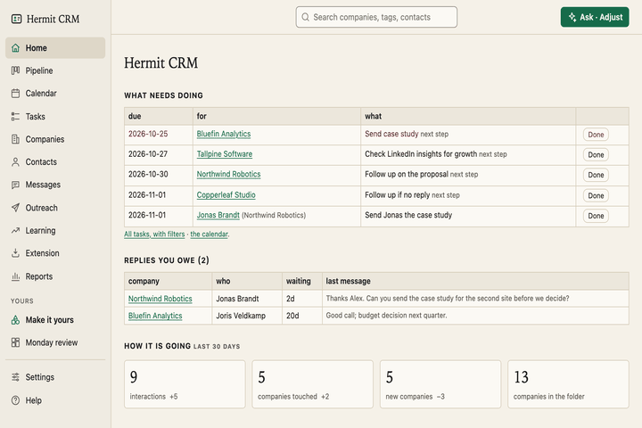
HomeWhat is due this week, the replies you owe and last month’s numbers, on one page.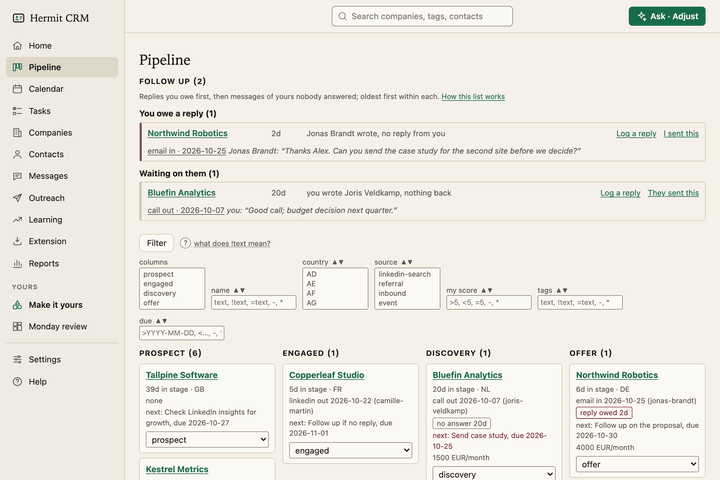
PipelineA board from prospect to won, plus a follow-up radar for unanswered threads.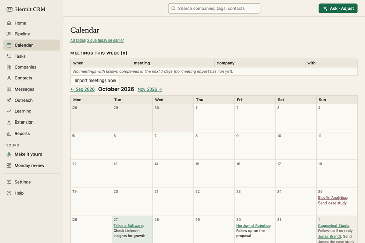
CalendarOverdue and due-today next steps, a month view, and a brief before each meeting.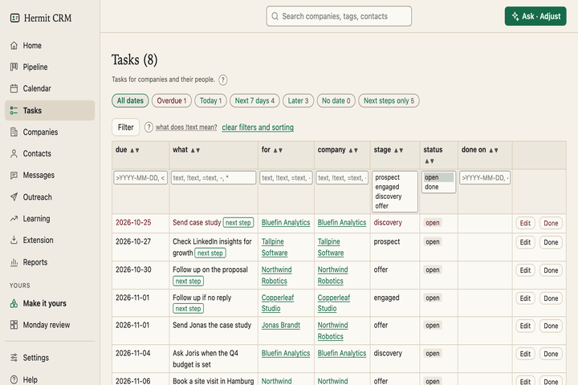
TasksEvery task for every company in one list, with date buttons, filters and your own task types.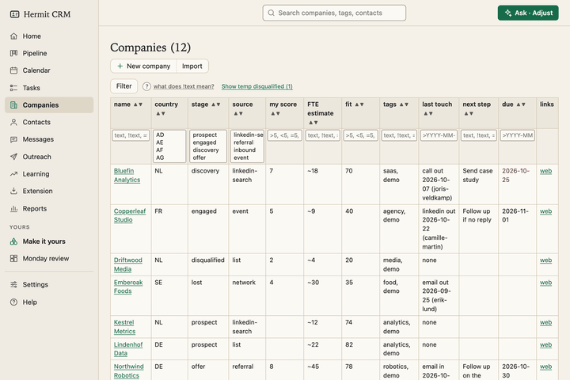
CompaniesSortable tables of companies, and one timeline per company of every email, call and meeting.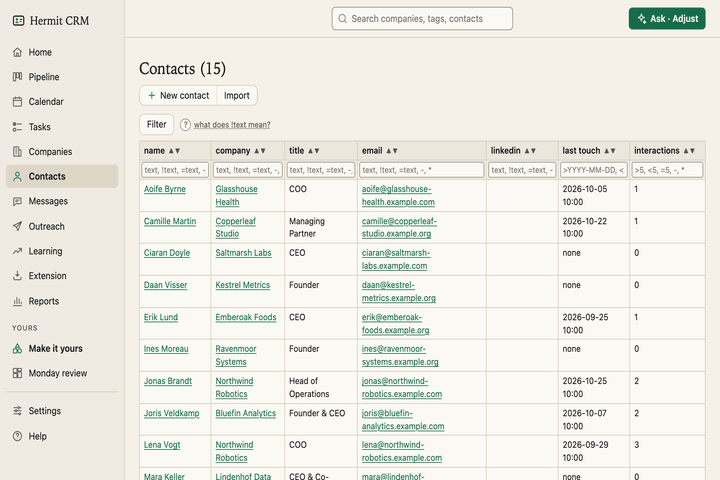
ContactsEvery person across your companies, with a page of their own: roles, history and tasks.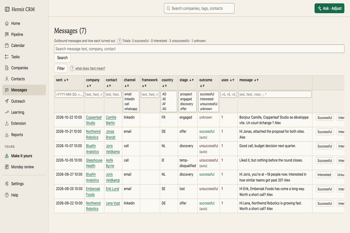
MessagesEvery message you sent, with what came of it, so you can see which wording gets answers.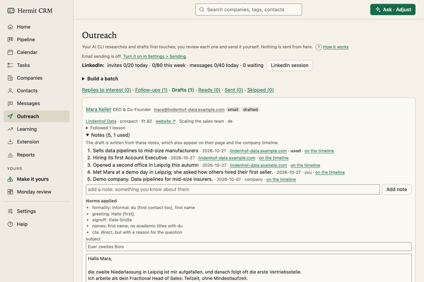
OutreachResearches a company’s website, drafts a first message or a follow-up in your wording, and waits for your approval.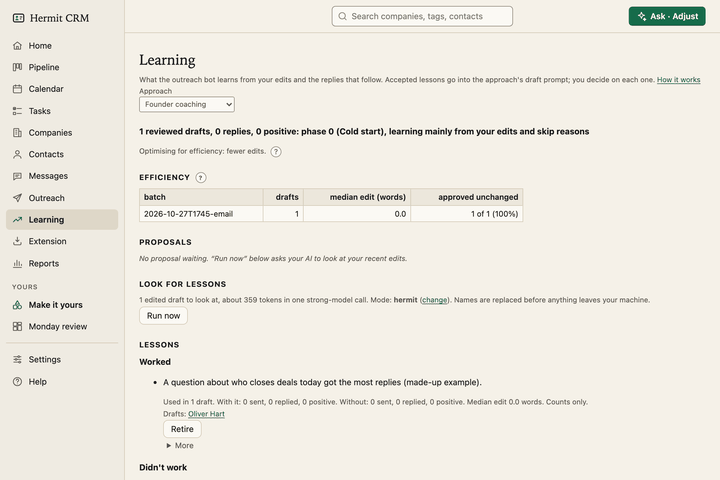
LearningWhat the outreach bot learns from your edits and from the replies, as lessons you accept one by one.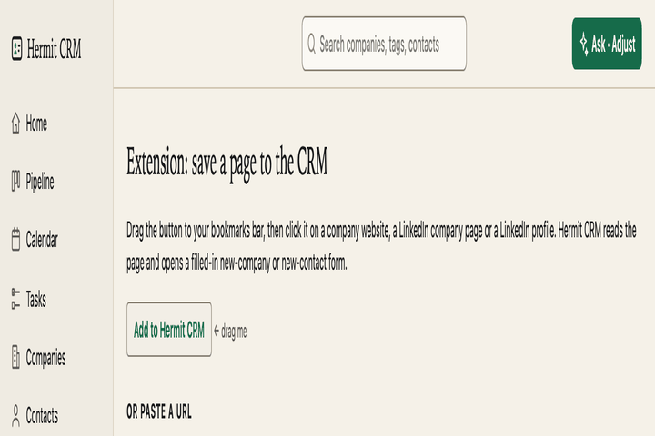
ExtensionTurn the page you are looking at into a company or a contact, from one bookmark.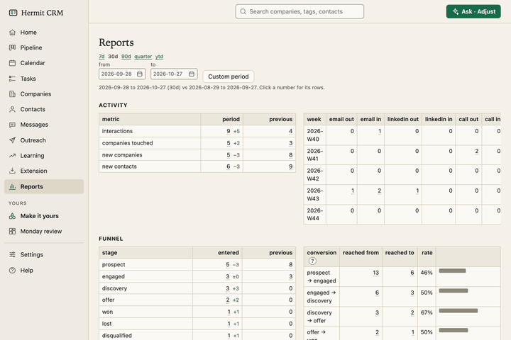
ReportsWeekly activity, funnel and conversion, time in stage, and which messages get answers.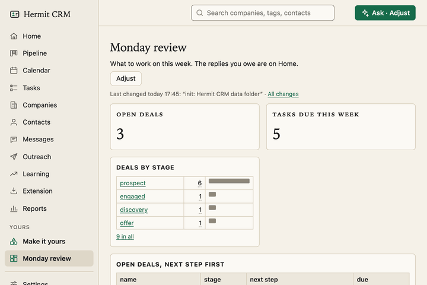
Make it yoursPages of your own with lists, counts and bar charts. Describe one in a sentence, your AI builds it, and you pin it to the sidebar.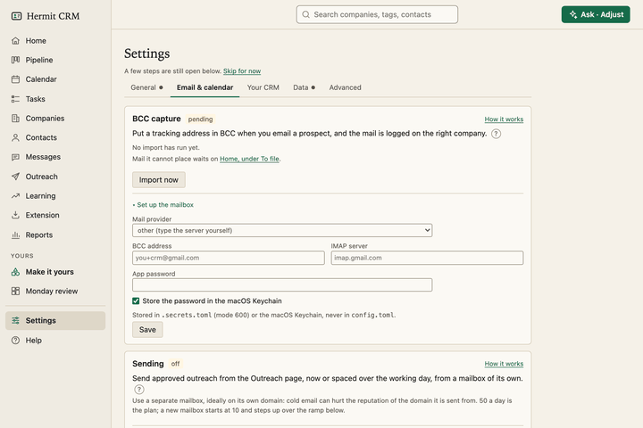
SettingsYour name, mail and calendar capture, backups, fields, deal stages and outcomes, set in the browser.
Help. The same pages as the docs: how each part of Hermit CRM works, for people and for AI agents. The Help link in the app opens the page for the screen you are on. Hermit CRM docs
Hermit CRM is a free, open-source CRM for founders, freelancers and anyone doing their own sales. It runs on your Mac or Linux computer and keeps every company, contact and conversation as a Markdown file in a git folder on your own disk. A local web app gives you a pipeline board, a calendar of next steps, message drafts and reports. AI tools such as Claude Code, Codex or Claude Desktop can read and update the pipeline through the files, a small CLI or the built-in MCP server. It is alpha software under the Apache License 2.0, with no warranty and no support.